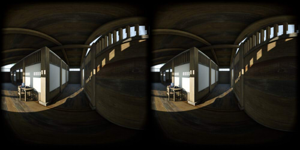

2019/01/13 Update.
2019/01/13 Update.
下の画像をクリックすると、WebVR表示になります。
Oculus GoのFirefoxのWebVRとして動画(mp4)を再生することができます。
Oculus Goの標準ブラウザでは動作しません。
| Rendering |
Unity 2018.3 |
| Resolution |
4096 x 2048 pixel |
| Panorama |
VR180 / Side by Side |
| IPD |
64mm |
左右を向いた場合の視差を考慮。
フレーム間の補間なし。
カメラの平行移動でガタつく。

Download
フレーム間の補間あり。
ブラーがかかってガタつきは緩和される。
Download